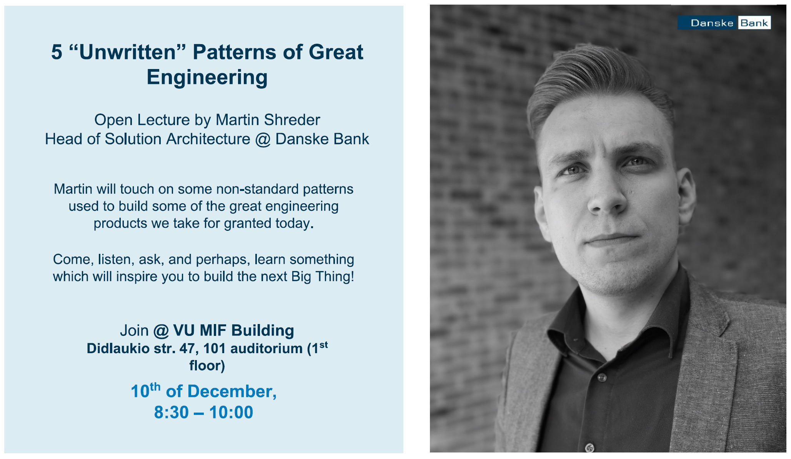

class: center, middle, main-title # Presenting your work --- ## Today - Your questions - [Sli.do #VUSE1913](https://app.sli.do/event/1smbecqg) - Some tips for presenting your work --- ## Bad presentation - what? -- - Boring - Repetitive - Dry facts - Wall of text - Monothonic -- - Unclear -- - Irrelevant -- - Etc. --- ## Good presentation - how? -- - Preparation - Preparation - Preparation - Preparation - Preparation - Preparation - ... -- - Delivery --- ## How to prepare? -- 1. Know your audience and motivation -- 1. Prepare outline -- 1. Prepare content -- 1. Plan delivery -- .footnote[ - Notice any parallels with essential software development activities? ] --- ## First: Audience - Who is going to attend? -- - Why are they there? -- - What is valuable for them to hear/see? -- - What is their backgorund? -- - What are they like as people? -- - What are they interested in? -- - What motivates them? --- ## First: Your motivation What is your primary goal? -- - To inform -- - To entertain -- - To impress -- - To persuade -- - To move -- - To challenge -- - ... -- What are your secondary goals? --- ## Outline: Main points - What is the central idea you want to get across? -- - What do you **really** want to tell? -- - What are the main points that support the central idea? -- - Remember that your presentation has to **create value** for the audience -- - In what order will you deliver your ideas? -- - Problem → arguments → conclusion -- - [Start with why](https://www.youtube.com/watch?v=sioZd3AxmnE) -- - [The Pyramid Principle](https://medium.com/lessons-from-mckinsey/the-pyramid-principle-f0885dd3c5c7) -- - Main idea → supporting information → main idea --- ## Outline: Supporting information - What facts, examples, metaphors, or stories will support your main points? - Nothing comes close to a good metaphor or a story -- - Storytelling - Explains abstract concepts and ideas - A skill that can be trained - Something very human - Inspires, motivates, unites people -- - How will you transition from one point to the next? ??? - Storytelling is a big thing in marketing/advertisement business - Exposure as octopus. - Story has to have a key person that the audience can connect to (relatable); must have beginning/middle/end; should be comic (protagonist succeeds) or tragic (fails) --- ## Outline: Intro and conclusion - Use introduction to - Hook the audience - Set the stage - Align expectations - Explain relevant context/background -- - Use the closing to - Reiterate the main idea - Call to action - Present future plans --- ## Content: Form - Talk -- - Live demo -- - Recorded demo -- - Slideshow -- - Discussion, play, etc. --- ## Content: Principles - *"Less is more"* -- - *"Be brief, be bright, be gone"* -- - One strong argument to justify a point -- - Find a balance between fact and feeling --- ## Content: Slides - First slide - A question or invitation = curious - Title and presenter name = usual, boring -- - Common problems - Overload -- - Details too small -- - Speech and text at the same time -- - Works well - Quiet progress meter / table of contents at the bottom --- ## Delivery: Connect - Tell it **as if** it's the most important thing - Prefer *I* over *we* - Speak for the back rows - Maintain eye contact - *S L O W D O W N* --- ## Delivery: Appearance - Appear confident and professional - Dress for occasion - Stand straight - Don't pace, don't fiddle - Leave a marker on the floor to remind yourself not to pace -- - Appear as a group - Clear responsibilities, smooth transitions - Don't attract attention unless you're speaking -- - Rehearse - Timing with a clock - Film yourself ??? - When you move, people look at you - When you stop, people look at screen --- ## Delivery: Technicalities - Presenter mode -- - Shortcuts - `b`/`w` - blacks out/whites out - `number` - jumps to slide -- - Avoidable technical problems - Test beforehand - Use simple and proven formats/tools/hardware --- ## Key takeaways - Prepare - there are no shortcuts -- - Know your audience and your goal -- - Have a clear, simple, minimal structure -- - Slides are only supporting content -- - Presentation and public speaking skills are trainable --- ## Recommended resources - Ted talk: [Start with why](https://www.youtube.com/watch?v=sioZd3AxmnE) - Ted talk: [The Secret Structure of Great Talks](https://www.ted.com/talks/nancy_duarte_the_secret_structure_of_great_talks.html) - Some examples: - [Slides](https://3perf.com/talks/web-perf-101/) - [Slides](https://www.infoq.com/presentations/systems-event-driven/) - [Slides](https://www.infoq.com/presentations/solid-case-study/) --- class: middle, center # Questions? --- ## Next time 